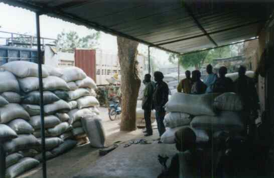
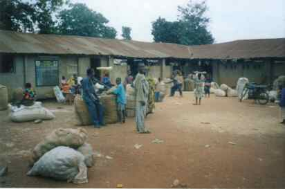
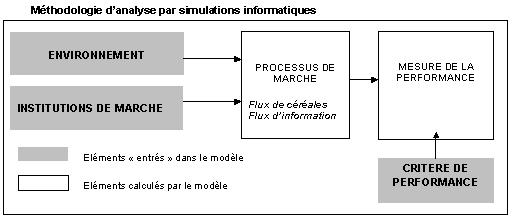

|
MARKETS : Marchés céréaliers en Afrique de l'Ouest
Evaluer la performance de différentes institutions de marché à l'aide de simulations informatiquesFranck Galtier, Cirad. Les célèbres travaux de F. Hayek, L. Hurwicz, J. Stiglitz, et S. Grossman ont montré que la performance des marchés dépend de leur capacité à assurer une diffusion d'information entre les agents économiques. Comme l'information se transmet par les processus de négociation et d'échange, la forme du réseau d'échange joue un rôle crucial puisqu'elle détermine l'architecture des canaux par lesquels circulent les flux d'information. Des travaux récents analysent cet aspect à l'aide d'outils mathématiques [Kirman 1983 ; Ioannides 2002] ou informatiques [Kirman et Vriend 2000 ; Kerber et Saam 2001]. Le travail présenté ici se range dans la seconde catégorie. Magasin d'un grossiste de Niono (Mali)  Il s'agit d'une analyse de la performance comparée de deux modes d'organisation du commerce de gros très répandus dans les filières agricoles des pays du sud : le commerce en réseau et le commerce sur des places de marché. Ces deux institutions fonctionnent d'une manière très différente. Dans le cas du commerce en réseau, chaque grossiste des zones de consommation (GC) dispose de correspondants (GP) dans les différentes zones de production (un par zone) et ne doit en principe s'approvisionner qu'auprès de ses correspondants. Ainsi, lorsqu'un GC désire acheter du maïs ou du mil, il contacte ses correspondants dans différentes localités (en général par téléphone ou par des courriers remis à des routiers ou à des chauffeurs de taxi), centralise les propositions de vente formulées par chacun d'eux (en terme de prix, de qualité, de délai de livraison, de délai de paiement etc.) et réalise la transaction avec celui qui a l'offre la plus intéressante. Tout le processus de négociation et d'échange se déroule donc à distance. Dans le cas du commerce sur des marchés de gros, les GC se déplacent dans les zones de production où ils rencontrent les GP sur des places de marché (le jour de marché). La diffusion de l'information est donc très différente dans les deux types d'institutions.  Marché de gros de Kétou (Bénin)La discussion concernant les performances relatives de ces deux institutions a des implications importantes pour les politiques publiques. En effet, les états et les agences d'aide ont tendance à favoriser les marchés de gros jugés préférables pour assurer la " transparence " du marché. C'est cette idée que nous avons testée ici en analysant s'il n'existe pas des situations où les réseaux marchands s'avèrent être de meilleurs systèmes de communication que les marchés de gros.  L'analyse a été menée à partir de simulations informatiques réalisées à l'aide d'un système multi-agents (SMA). La démarche consiste à " entrer " dans le modèle un couple (environnement, institution de marché), à simuler le processus d'échange induit et à mesurer l'efficacité de l'allocation des ressources ainsi obtenue (en fonction d'un critère de performance défini ex ante). Cette approche (représentée sur le graphique) permet de tester l'efficacité comparée des réseaux et des marchés de gros dans différents environnements (afin de voir leur domaine de pertinence respectif). Dans les scénarios réalisés, l'environnement a été modélisé à partir de deux jeux de variables : le degré de concentration de l'activité au niveau des grossistes des zones de production (GP) et la variabilité de l'approvisionnement de ces grossistes. Les institutions de marché représentées sont les réseaux marchands et les marchés de gros mais aussi une institution fictive " parfaite " c'est à dire permettant une transparence totale du marché et une allocation des ressources optimale. Cette dernière institution sert de témoin pour mesurer l'efficacité des deux autres. Enfin le critère de performance retenu est la minimisation du rationnement au niveau des localités de consommation.Les simulations ont porté sur 150 scénarios différents (50 environnements et 3 institutions de marchés). Chacun de ces 150 scénarios a donné lieu à des simulations sur 100 pas de temps, ce qui correspond approximativement à deux campagnes agricoles si on suppose qu'un pas de temps du modèle représente une semaine dans la réalité. 1000 simulations ont été réalisées pour chaque scénario afin de neutraliser l'effet des variables aléatoires introduites dans le modèle. Principaux résultats
Ce travail confirme l'intérêt de la modélisation informatique pour expliquer comment une allocation des ressources performante peut émerger des interactions décentralisées de nombreux individus entre lesquels l'information est dispersée. Cette approche est ainsi complémentaire d'autres outils comme la théorie des jeux ou les expérimentations de marché [Smith 1982 ; Roth 2001]. Ses points forts sont qu'elle permet l'analyse de processus de marché au sein desquels les transactions se déroulent " hors équilibre " (ce qui est difficile avec la théorie des jeux) et impliquant de nombreux acteurs et des pas de temps assez longs (ce que les expérimentations ne permettent pas). Par ailleurs, ce travail ouvre un certain nombre de perspectives de recherche. L'une d'elles consiste à approfondir l'analyse des " messages " véhiculés par le marché à travers les propositions d'achat et de vente des acteurs. En effet, la composition de ces messages est régulée par les règles qui cadrent la négociation des paramètres de l'échange (prix, qualité, délais de paiement et de livraison etc.). Ces règles (qui constituent le " langage du marché ") peuvent également être évaluées à l'aide de simulations informatiques. BibliographieAMSELLE, J.-L. (1977). Les commerçants de la savane : histoire
et organisation sociale des Kooroko (Mali). Paris, Anthropos. Pour en savoir plus, contactez l'auteur.
|